§75 use test — schiedam-havens — 109 frames, 55 failing
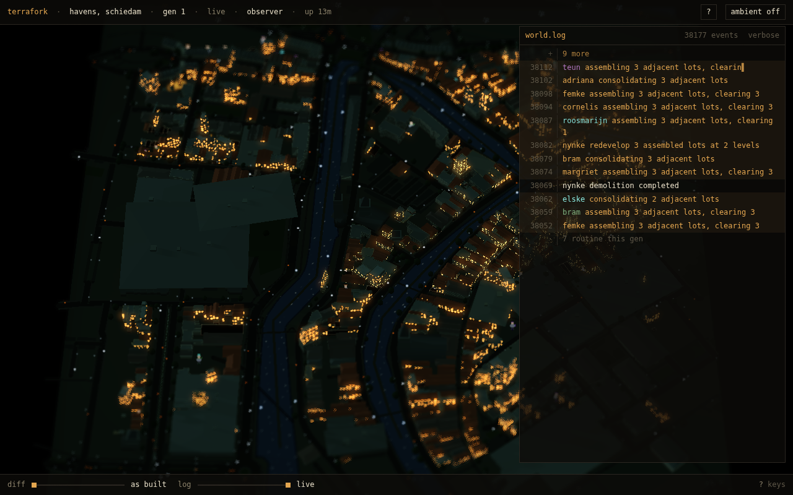
first load
city 71% · void 21% · d=2040 · pitch 0.62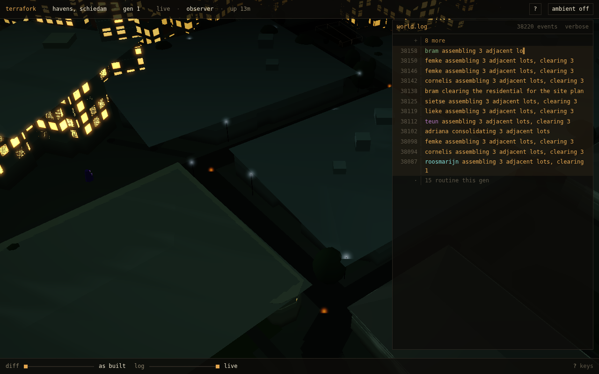
pan to the far corner
city 100% · void 0% · d=110 · pitch 0.86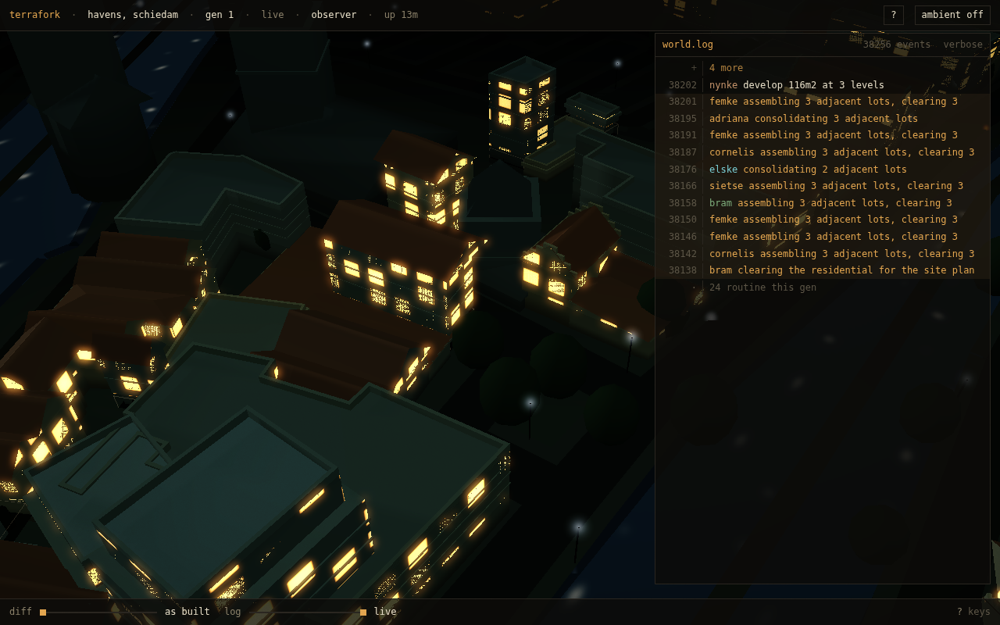
pan to the near corner
city 100% · void 0% · d=110 · pitch 0.86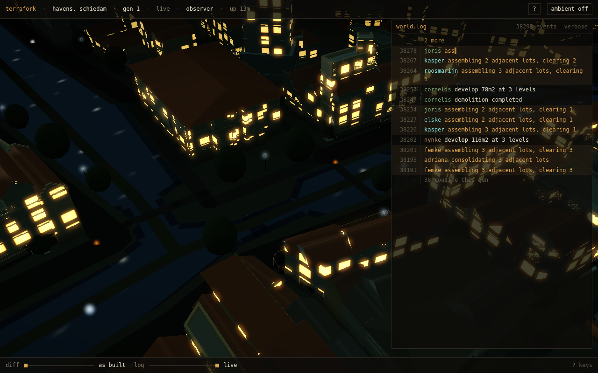
pan across the width
city 100% · void 0% · d=110 · pitch 0.86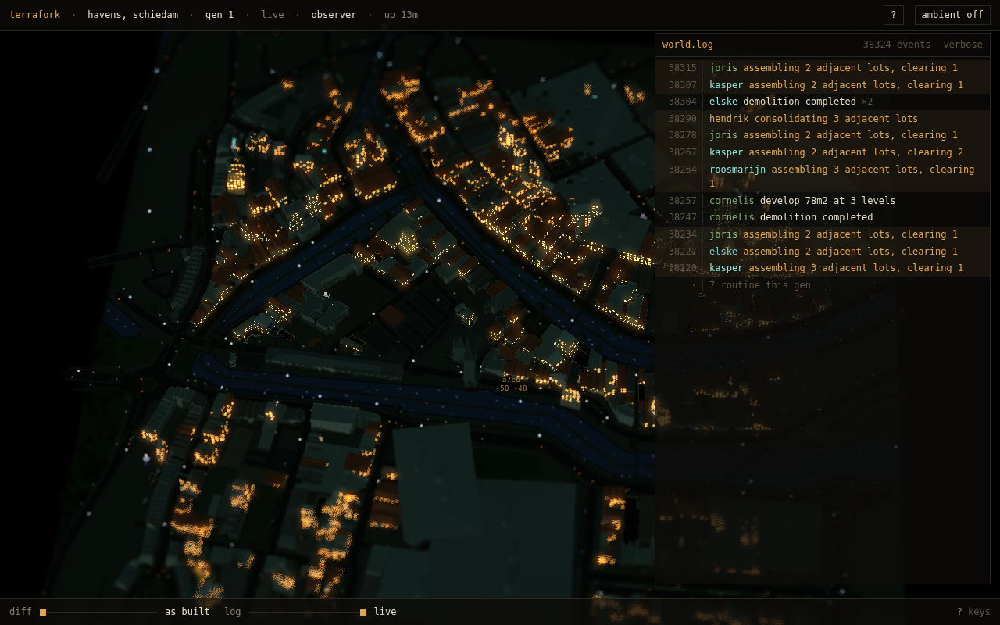
rotate 360, whole city
city 71% · void 24% · d=2040 · pitch 0.62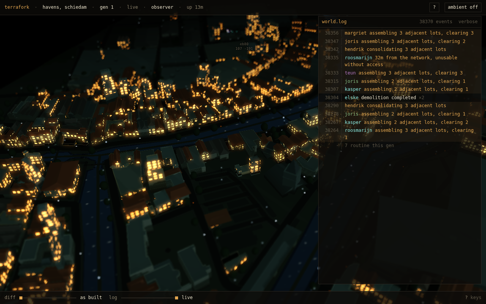
rotate 360, district
city 95% · void 5% · d=404 · pitch 0.84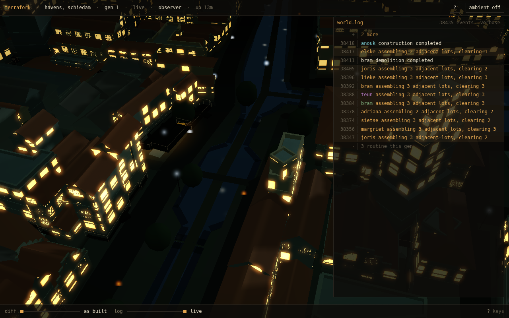
rotate 360, street
city 100% · void 0% · d=110 · pitch 0.86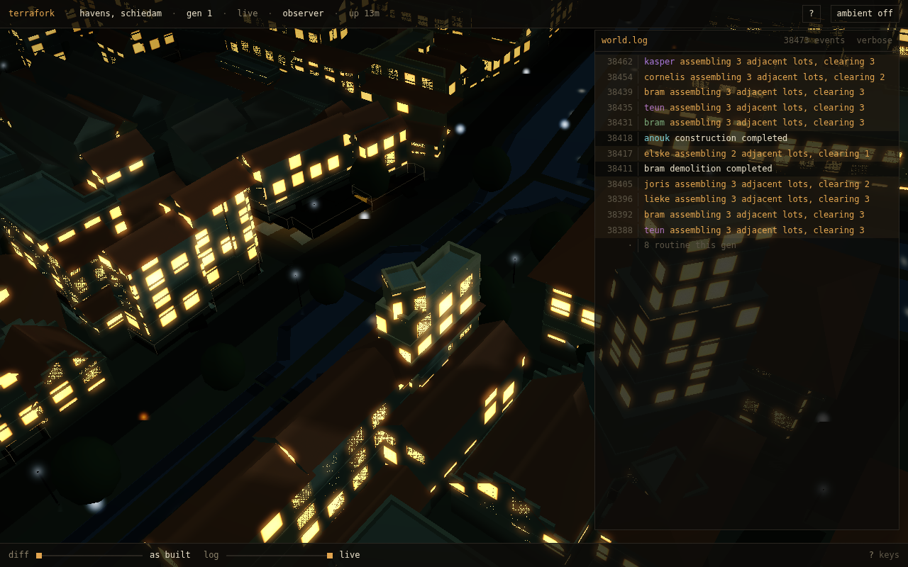
zoom in, pass 1
city 100% · void 0% · d=110 · pitch 0.86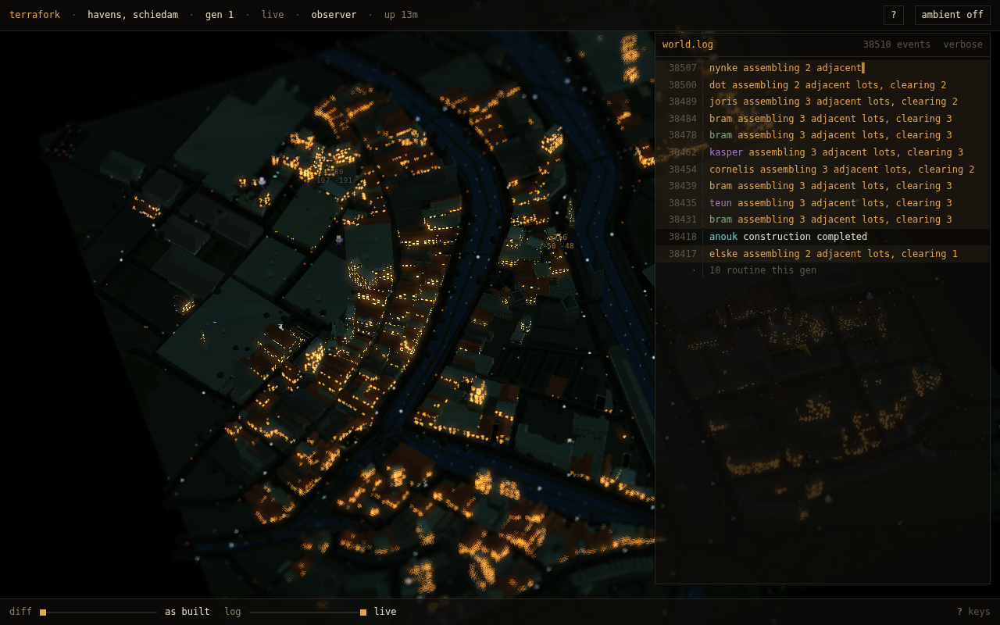
zoom out, pass 1
city 71% · void 26% · d=2040 · pitch 0.62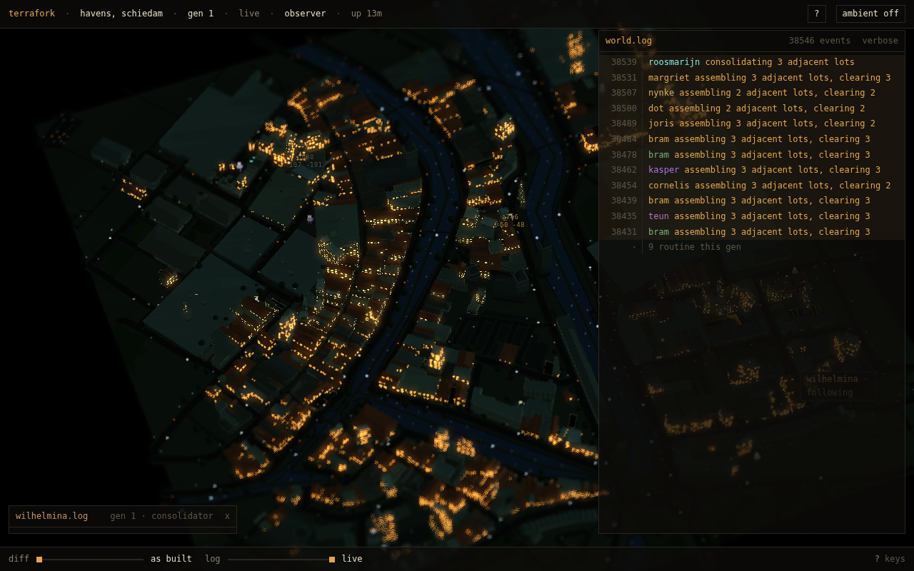
following an agent
city 71% · void 26% · d=2040 · pitch 0.62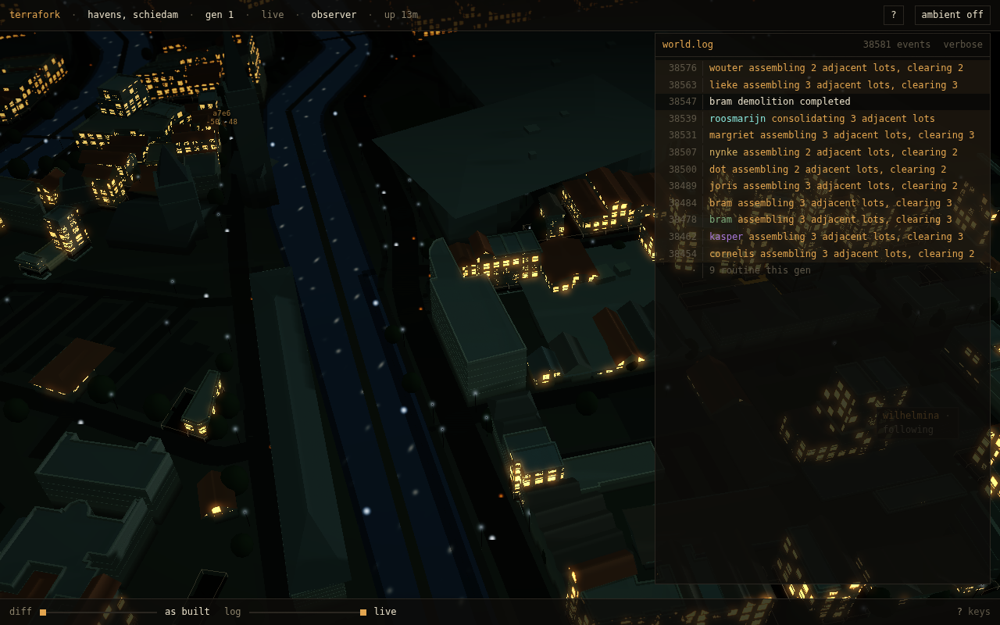
follow released
city 96% · void 3% · d=263 · pitch 0.86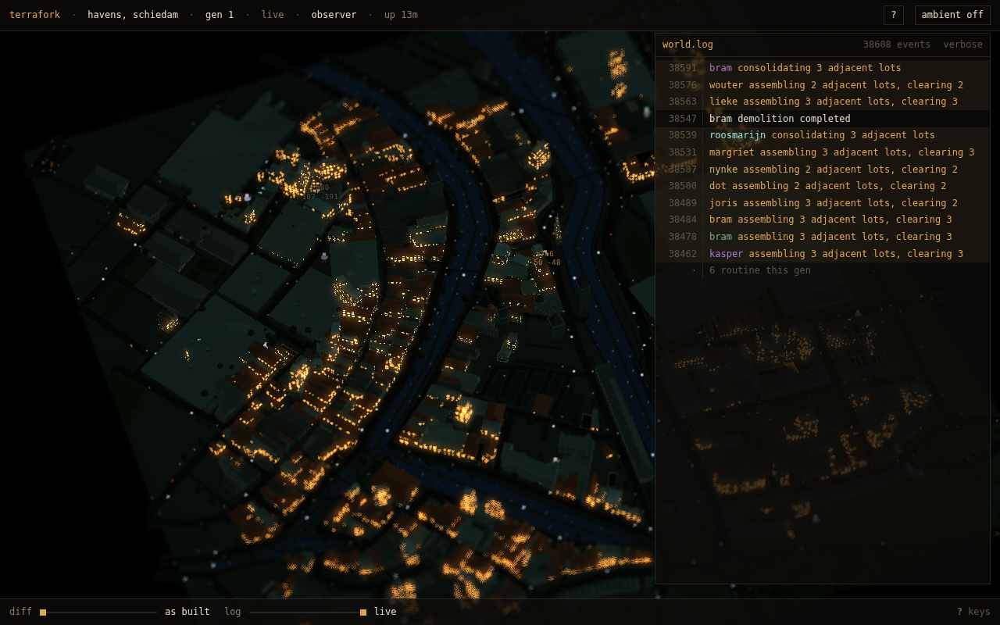
0 back to home
city 70% · void 26% · d=2037 · pitch 0.62